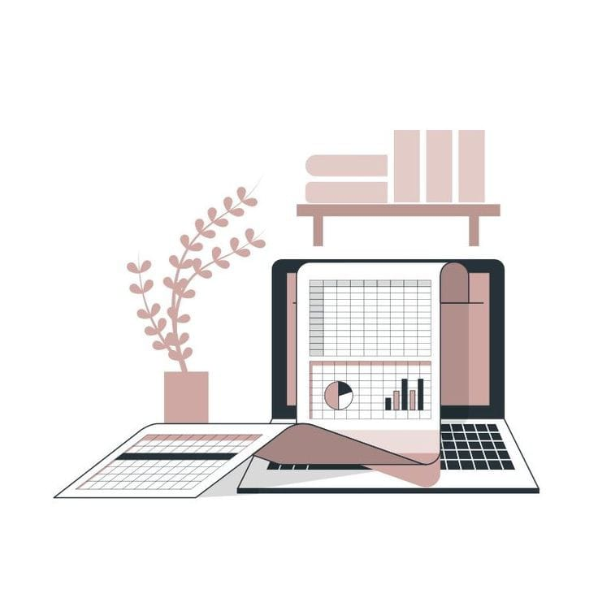

Welcome to My Blog

My Fifth Year
Nov 12
This is a summary of my fifth year at university where I learned a lot about time management, met new friends, and discovered my passion for computer science...
Continue readingExam Preparation Tips
Nov 11
Here are some tips on how to prepare for exams effectively. These tips include creating a study schedule, understanding your exam format, and practicing past papers...
Continue reading

Balancing Studies and Social Life
Nov 10
Balancing academic responsibilities with social life can be challenging. Here are some strategies to help you manage both without sacrificing either...
Continue reading